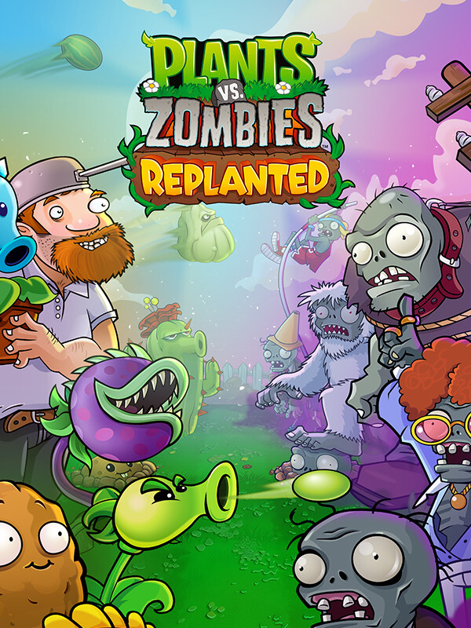

 |
|
| Tiempo de juego | 3m 47s |
| Última actividad | 9/12/2025 19:52:53 |
| Añadido | 9/12/2025 19:47:33 |
| Modificado | 9/12/2025 19:52:48 |
| Estado de finalización | Jugado |
| Librería | Playnite |
| Fuente | |
| Plataforma | PC (Windows) |
| Fecha de lanzamiento | 23/10/2025 |
| Puntuación de la Comunidad | |
| Puntuación de la Crítica | 80 |
| Puntuación de usuario | |
| Género | Strategy |
| Desarrollador | PopCap Games The Lost Pixels |
| Editor | Electronic Arts |
| Característica | Co-Operative Multiplayer Single Player |
| Enlaces | Steam Official Website Epic |
| Tag | |
Hay ideas que son tan boludas que terminan siendo geniales. "¿Y si defendemos una casa de un apocalipsis zombie usando plantas de jardín?". Esa pregunta, que parece un chiste, es la base de uno de los juegos de estrategia más adictivos, encantadores y perfectamente diseñados de la historia. "Plants vs. Zombies" es la obra maestra de PopCap y un clásico inmortal, ahora en HD.
La fórmula es simple de entender pero un vicio de dominar. En tu jardín, que es el campo de batalla, plantás girasoles para generar "sol" (la guita del juego) y con eso comprás un arsenal de vegetales de combate: lanzaguisantes, nueces que sirven de muralla, papas que son minas explosivas, jalapeños que queman una línea entera... cada planta con su función táctica. Y del otro lado, vienen los zombies, cada uno con sus propias mañas y counters.
Pero lo que lo convirtió en leyenda fue su carisma. El juego desborda personalidad por todos lados. Desde el diseño adorable de las plantas hasta los zombies ridículos (el que tiene el cono en la cabeza, el que viene con un delfín, el que baila...). Todo esto guiado por tu vecino loco, Crazy Dave, y acompañado por una banda sonora icónica que se te queda pegada en la cabeza para siempre.
La campaña te va introduciendo plantas y zombies nuevos a un ritmo perfecto, manteniéndote siempre enganchado y aprendiendo nuevas estrategias. Y cuando la terminás, el juego recién empieza. Tenés modos de puzzle, minijuegos, un modo supervivencia infinito y el Jardín Zen para relajarte. PopCap era el rey de meter contenido para que nunca dejes de jugar.
Es uno de esos juegos raros que son perfectos. No le sobra ni le falta nada. Es la puerta de entrada ideal al género "tower defense", un desafío de estrategia que nunca es injusto y una explosión de creatividad y humor. Su diseño es tan inteligente y atemporal que se disfruta hoy exactamente igual que el día que salió.